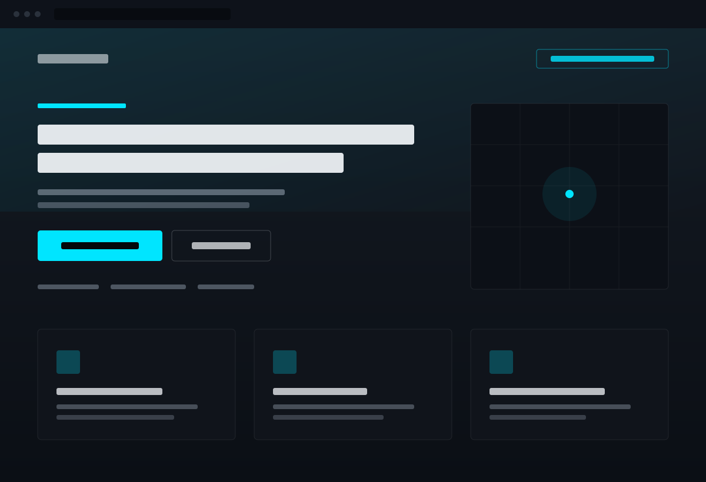
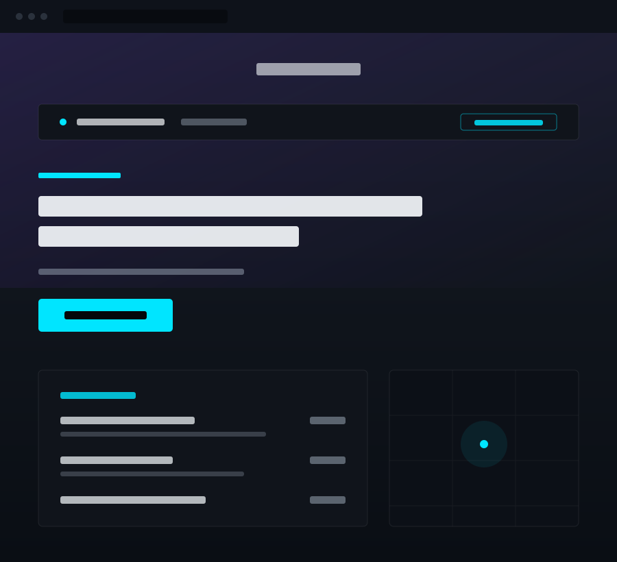
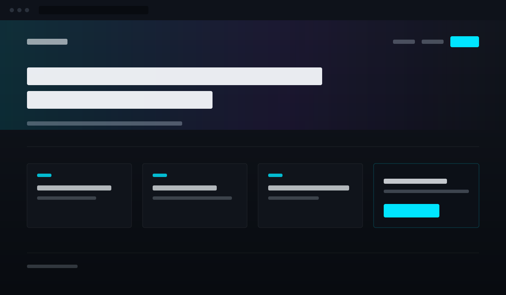

Concept ProjectHome Services Local Service Business
Built to turn an urgent search into a phone call before the visitor scrolls twice.
View ProjectDFW Web Design + Development
Fast, modern websites for small businesses—whether you need to repair what you have, redesign what is not working, or build something new.
Selected Work
Every site has a job. One needs to generate phone calls before the visitor finishes scrolling. One needs to build enough trust to justify a price. One needs to present a menu without a pinch-to-zoom fight. I design toward the job, not toward a template.

Concept ProjectBuilt to turn an urgent search into a phone call before the visitor scrolls twice.
View Project
Concept ProjectBuilt so hours, menu, and directions are readable on a phone in one hand.
View Project
Concept ProjectBuilt to route visitors into the archive and toward one clear subscribe action.
View ProjectNote These three are concept projects, labeled as such. Real client work replaces them as it is cleared for publication — no invented logos, metrics, or testimonials in the meantime.
Ways to Work Together
Three lanes. Most businesses need less than they expect — I'll tell you which one applies before you spend anything.
For websites that are close but feel outdated, broken, slow, or unclear.
Typical range$300–$900
Start a Website RescueFor businesses that need a dramatically stronger first impression without rebuilding everything.
Typical range$900–$2,500
Start a RedesignFor businesses that need a clean, modern foundation they own.
Typical range$1,800–$4,500
Start a New BuildLogo cleanup, menus, flyers, social graphics, and related brand assets can be included when the website needs them.
Before / After
A heating and air concept redesign. Same business, same services, same photos available — rearranged so a person with a broken AC in July can find the quote path in about two seconds.
Design reasoning
The original page was not ugly so much as undecided. It opened with a paragraph about the company's history, put five equal-weight links in the navigation, and buried the phone number in the footer. Someone whose AC just died does not read history.
The redesign picks one job — get the visitor to request a quote — and subordinates everything else to it. The offer goes first, trust signals go immediately under it so the offer is believable, and the two ways to act (quote form, phone call) stay visible at every scroll position on mobile. Nothing was added that the business could not already back up.
Concept redesign. No performance or conversion claims are made here — only design decisions and the reasoning behind them.
How It Works
Send the current URL, business goal, and what feels wrong. A messy explanation is fine.
I identify the highest-impact path and recommend repairing, redesigning, or rebuilding.
The site is planned, designed, developed, refined, and delivered without an agency chain.
About
You work directly with me—the person planning, designing, writing, and building the site. No account managers, ticket systems, or handoffs. I'm based in the Dallas–Fort Worth area, work with businesses around Plano and across the metroplex, and take on projects anywhere the work fits.
Send me the URL, tell me what feels wrong, and tell me what you want customers to do. I'll give you a direct first read on the smartest next move.
No forms, no funnel, no automated sequence. The message comes straight to me.
Questions
Usually, yes. If the structure underneath is sound, repairing is faster and cheaper than rebuilding, and I'll say so. If the platform is fighting you badly enough that repairs won't hold, I'll tell you that too rather than sell you patches.
No. I'm based in Dallas–Fort Worth and I like meeting local clients in person, but the work happens over text, email, and calls. Location isn't a requirement.
It depends on what's already in progress, so I won't promise a date on a webpage. Text me the URL and I'll tell you my actual availability that day, along with a realistic timeline for the scope you need.
Yes. You get the source files and the deployed site, and they're yours. No proprietary page builder, no license that expires, no hostage situation if you ever want to work with someone else.